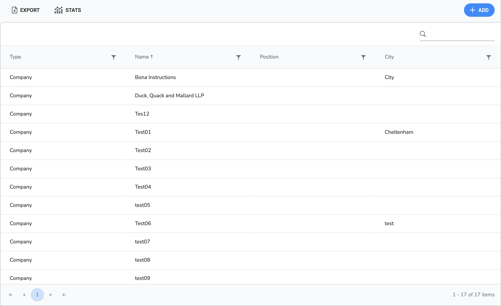
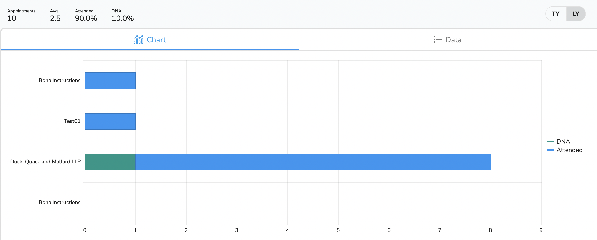

Overview
Contacts are third parties related to the client. They could be Solicitors, Insurance companies, IPs, Parents, etc.
List View
The page shows the list of contacts in the system. It can be filtered and sorted by using the column headers (See below). Clicking on any of the contacts will take you to their contact page.
The page is split into five areas:
- ToolBar
- Filter Bar
- Client Table Header
- Client List
- The Navigation Bar
- Toolbar
Toolbar
The toolbar has three buttons:
| Icon | Label | Position | Purpose |
|---|---|---|---|
| Export | Left | This exports the contact list to a pdf. | |
| Stats | Left | Open the contact Stats Page. | |
| Add | Right | AThis opens the add contact page. |
Filter Bar
This is a set predefined filters
| Icon | Label | Position | Purpose |
|---|---|---|---|
| Right | This text field will filter the contacts by name. |
Table Header
This contains the header information for the table. It has two features:
| Sort | If you click on any of the headers it will sort to that field. If you click it again it will reverse the sort and clicking it again will remove the sort. |
| Filter | Each field is filterable by clicking on the ‘filter’ icon and a small pop-up will open giving you options to consider. |
Table List
This is the list of available contacts. If you wish to open a contact click the relevant line.
Navigation Bar
This show the numbers of records on the right and navigation buttons on the left.
Page View
The Contact page contains all the details for the contact. It has two main areas:
- The navigation Sidebar
- The display area
Navigation Side Menu
This is split (in order from top to bottom) into:
- Navigation Buttons
- Action Buttons
- Info
Menu Buttons
When you have selected a menu item then this area will show the details in the display area to the right. On opening the page the contact overview is shown.
| Icon | Label | Description |
|---|---|---|
| Overview | Shows contact summary information | |
| Details | This is where you can edit the contact full details | |
| Documents | This is where you can view the contact documents | |
| Diary | This is where you can view the appointments related to the contact. | |
| Quieries | This is where you can see all open queries related to the contact (If there is a number to the right,the number refers to all open queries) | |
| Call Log | This is where you can log interactions with the contact. | |
| Invoices | This is where you can see all invoices related to the contact. |
Action Buttons
In Order of Appearance theses are:
| Icon | Label | Description |
|---|---|---|
| Envelope | Envelope Opens the create Correspondence page | |
| Comment | Comment Opens the Call Log Dialog |
Stats Page
The Contact Stats page contains some overall stats for contacts. It has three main areas:
- The Toolbar
- The Tabs
- The display area
The Toolbar
The toolbar is the top most section. It has summary data on th left:
- Appointments - The total number of appointments
- Avg. - The average number of appointments per month.
- Attended - The percentage of attended Appointments
- Attended - The percentage of attended Appointments
On the right hand side is a toggle that switches between TY (This Year) and LY (Last Year)
The Tabs
This switches between a chart breakdown of contacts appointments and a data view.
The Display
This is where the views are displayed.